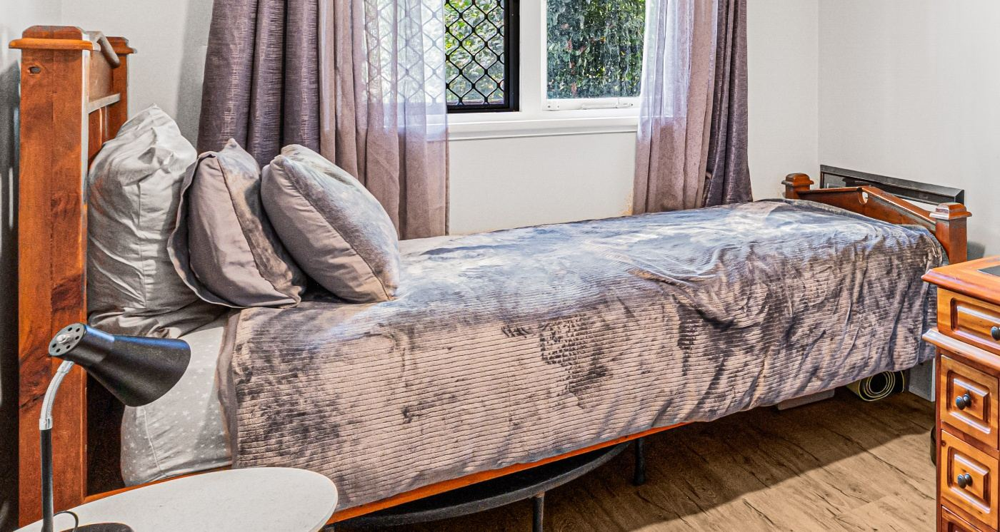
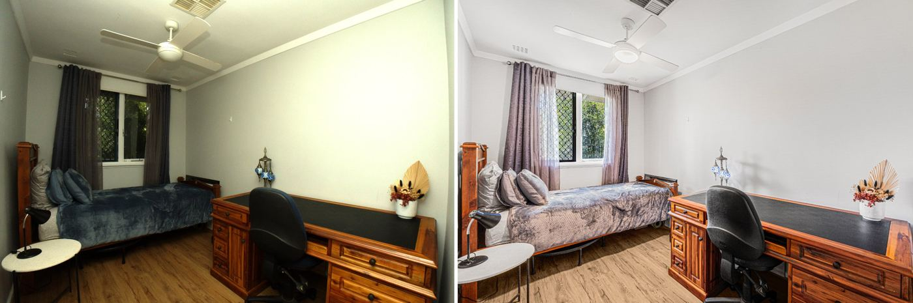
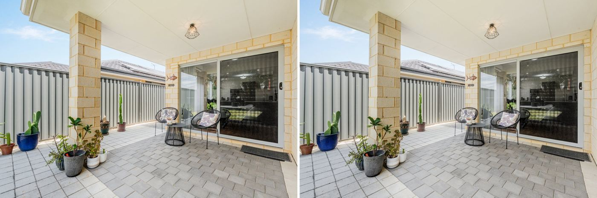
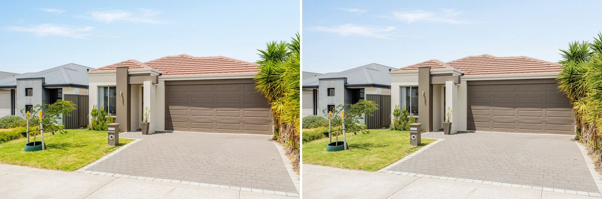
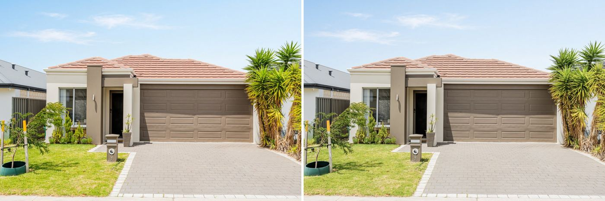

2 job(s) · 4 item(s) · Baker Production QC
DSC07997Restore the navy-blue bedding and charcoal curtains
The bedspread and cushions are navy/slate blue in the raw but came out lilac-grey, and the curtains turned purple. Keep everything else as is.


Done well: True-to-life neutral walls; Photographer removed cleanly from kitchen; Pale skies and good window views
DSC04569Re-export in sRGB (not Display P3)
Saved with a Display P3 colour profile; the rest of the set is sRGB. Portals that strip profiles show it muted (right).

DSC04589Re-export in sRGB (not Display P3)
Main front saved as Display P3 — lawn, roof and sky go flat on portals that strip the profile (right).

DSC04594Re-export in sRGB (not Display P3)
Same as above — Display P3 profile instead of sRGB.

Done well: Neutral whites, no cream; Clean sky masks around the palms; Consistent airy grade, straight verticals